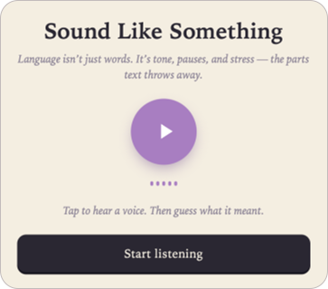
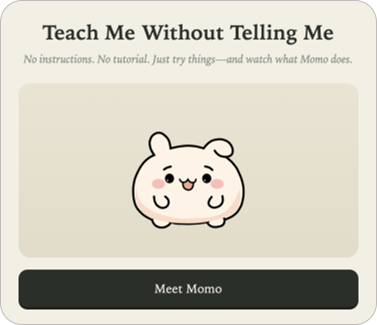
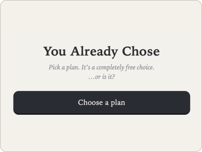
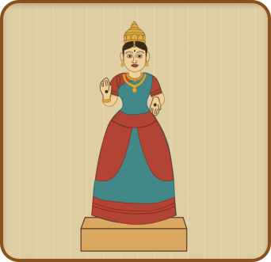
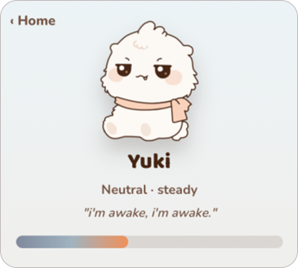
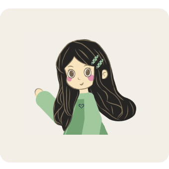

What Changed?
Experience change blindness by spotting what changes between two scenes—and see how attention shapes what we notice, miss, and act on.
Play Now ↗A collection of playful experiments inspired by neuroscience, the culture I grew up around, and my love for turning small ideas into interactive experiences.

My background in neuroscience shapes how I see people, behavior, and interaction. These experiments show how that perspective comes alive in HCI—and why I love it.
Experience change blindness by spotting what changes between two scenes—and see how attention shapes what we notice, miss, and act on.
Play Now ↗
Experience how tone, pauses, and stress change meaning—and why voice interfaces need more than words.
Play Now ↗
Experience how feedback and subtle cues can teach without instructions—by figuring out what Momo wants.
Play Now ↗
Experience how choice architecture and subtle visual hierarchy steer decisions before conscious thought takes over.
Play Now ↗The crafts and patterns I grew up around in Andhra Pradesh still shape how I see form, rhythm, and play. These projects are my way of bringing a little of home into interaction.

Kondapalli bommalu are a beautiful craft many people have never seen. I made this game so they could discover it by building and painting one.
Play Now ↗Muggu is an art form built from dots, rhythm, and repetition. I turned it into a game so people could create one and watch the pattern unfold.
Play Now ↗A collection of hand-drawn moments, micro-animations, and interactive gestures exploring character personality and motion.

A tiny yeti who guards distracting apps, reacts to your choices, and makes staying focused feel a little more human.
Play Now ↗
A collection of hand-drawn moments exploring how small gestures can give a character personality.
View here →